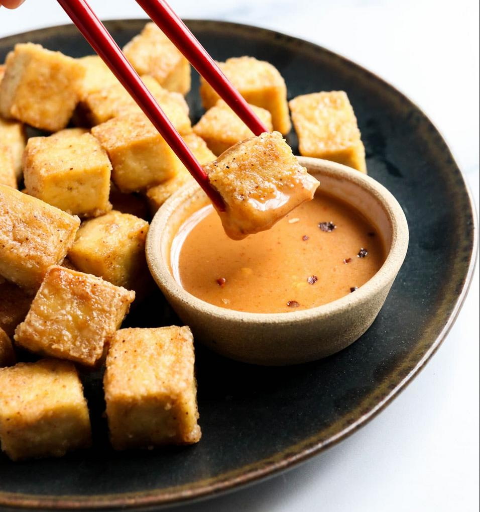

Baked Tofu

Summarized version of my favorite baked tofu recipe, goes great in an air fryer.
Source: Baked Tofu by Megan Gilmore
- 1 block extra-firm tofu
- 1 Tbsp toasted sesame oil
- 1 tsp salt
- 1/2 tsp garlic powder
- pinch of cayenne pepper
- 1 Tbsp of starch
- Drain, press, slice tofu in half height-wise
- Pat dry with paper towel and cut into cubes
- Toss tofu in oil, mix seasoning then stir it into the tofu
- Add starch until it's fully incorporated
- spread evenly onto baking sheet or air fry basket, then bake/air-fry at 400F for 20 - 25 minutes